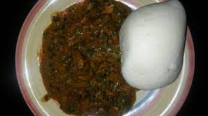
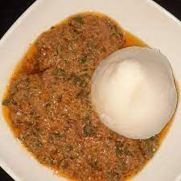
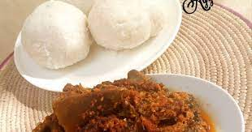

Tuwo Recipes

Tuwon Shinkafa
How to Prepare Tuwo Shinkafa and Miyan Taushe
Tuwo Shinkafa is a northern Nigerian dish. It is a thick pudding made out of local rice, millet or maze. It is usually served with soups of Northern origin. The soup may be Miyan Kuka, Miyan Kubewa or Miyan Taushe. However, for the sake of this article we will be serving our Tuwo with Miyan Taushe.
Miyan Taushe is a pumpkin soup of northern origin. It is most commonly eaten among the northern people of Nigeria; the Hausas and Fulani’s.
The rice used in making Tuwo Shinkafa must be the soft rice variety that becomes sticky when cooked. The soft rice variety is preferred because the grains are easily mashed into a mass of Fufu (Tuwo).This dish is particularly nutritious because of the ingredients used in making it. The vegetables provide a source of vitamin while the meat accounts for proteins. The pumpkin seeds are a good source of Magnesium, Manganese, Ion, Zinc and Copper. Again, the pumpkin seeds contain high amounts of antioxidants and are full of beneficial fats, boost immune system and help control blood sugar.
Ingredients
- 3 cups Short medium grain rice ...for Tuwo Shinkafa
- 1 pc Small size pumpkin
- 2 tbsp Peanut Butter
- 6 pcs Assorted (Lamb chops, Goat meat and Cow leg)
- 6 pcs Assorted Offals (Saki, Fuku, Heart and Kidney)
- 1 pc Smoked Fish
- 1.5 cup Dawa Dawa (locust beans)
- 2 pcs Scotch Bonnet (Ata Rodo)
- 100 grams Yakuwa leaves (sorrel)
- 1 bunch Spinach
- 5 tbsp Palm Oil (Optional)
- 1 pc Jan Tatasei (Red bell peppers)
- 2 pcs Fresh tomatoes
- 1 bulb Onion
Steps needed for making Tuwon Shinkafa
- Rinse the rice properly in cold water and put the rice into a pot.
- Pour enough water into it and allow it to cook at medium heat.
- Ensure that the rice is properly cooked by picking a grain and mashing it between your fingers. If it is not yet cooked, you can continue adding water until you are sure the rice is properly cooked.
- Allow the water to dry up once you are satisfied with the mash.
- Mash the rice with wooden spatula until all the rice grains have turned into a mash of Tuwo.
- Once you the Tuwo is formed, set aside and start preparing the Miyan Taushe.
Method
- Cut the pumpkin in half, then cut in chunks. Peel the hard outer layer, take out the seed and the hairy pulp. You can also use canned pumpkin puree as long as it is organic. If you are using canned pumpkin, add it to the pot after the meats have cooked.
- Boil and season the pumpkin with the assorted meats and smoked fish.
- Once the meat is cooked, fry it slightly.
- Take out the pumpkin and mash it into tiny bite sized pieces. Once this is done, set aside.
- Roast the Groundnuts for 3mins in a pan. You can use already roasted and peeled groundnut.
- Peel off the skin of the groundnut. And then blend in a mill till the groundnut forms a paste.
- Blend the pepper, tomatoes and onion.
- Put it in a pan and boil until all the water content has evaporated.
- Put the fried meat back into the pot with the meat stock. Add the mashed pumpkins. Allow it to simmer.
- Lower the heat, add the groundnut paste and allow it dissolve into the mix.
- Allow to simmer for 3mins. At this point, the soup is thick and has taken on an orange color.
- Add the locust bean and pepper. If you desire to use palm oil, now is the time to add it. Stir gently.
- At this point, add the chopped spinach.
- Stir and allow to simmer.
- Add the Yakuwa leaves to the soup. Stir and allow to simmer for few minutes.

